El muro de Berlín Al final de la Segunda Guerra Mundial, Alemania se rindió ante los Aliados, un grupo de países occidentales, incluidos Reino Unido, Estados Unidos, Francia y la Unión Soviética. El país quedó dividido en cuatro zonas de ocupación, bajo influencia de cada una de esas potencias. Berlín estaba en la zona soviética, pero como era la capital de Alemania se decidió que también se dividiría en cuatro áreas, una controlada por cada uno de los cuatro países. 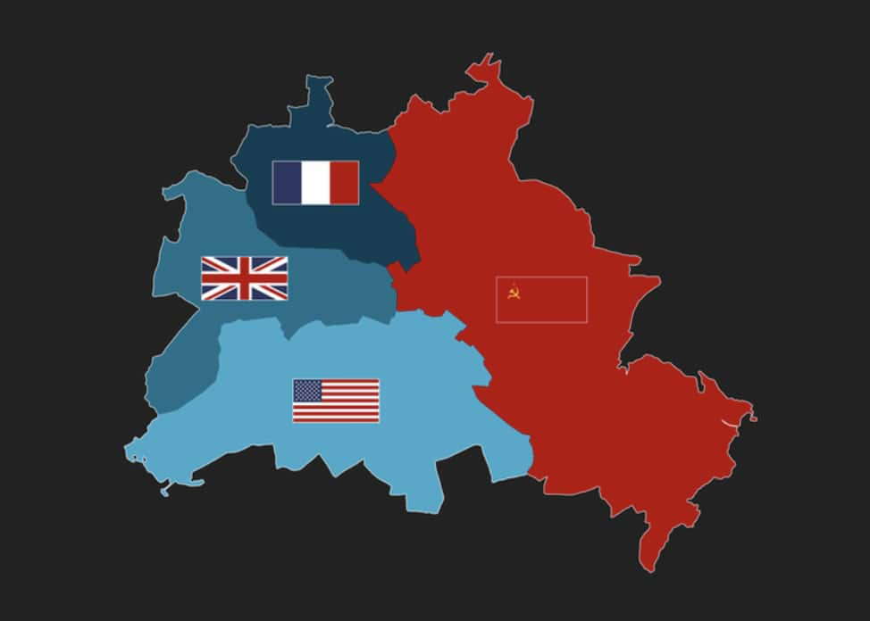 ¿Qué pasó después de la guerra? Pronto se hizo evidente que la Unión Soviética tenía ideas muy diferentes a las demás acerca de cómo debería funcionar su sección. Para 1949, Alemania se había convertido en dos países separados: la República Federal de Alemania (Alemania Occidental), siguiendo el modelo capitalista de Reino Unido, Estados Unidos y Francia y la comunista República Democrática Alemana (Alemania Oriental), en la órbita de la Unión Soviética, con un sistema de partido único y economía planificada. En Alemania Occidental había libertad de movimiento y la gente podría expresar libremente sus opiniones. Alemania Oriental tenía reglas más estrictas sobre cómo deberían comportarse las personas y una policía secreta, la Stasi, que supervisaba lo que hacían. Este es un acontecimiento historico muy importante que merece ser recordado y el por qué visitar Berlín. 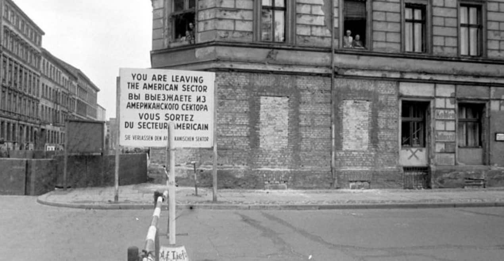 La migración A medida que pasaban los años, miles de personas al día escapaban del Este hacia el Oeste. En esa época, medio millón de personas pasaba cada día la frontera en ambas direcciones y de esta manera, podían comparar las condiciones de vida de ambos lados. Se estima que entre 1949 y 1961, alrededor de 2,7 millones de personas abandonaron la RDA y Berlín Oriental, según la página web oficial del Muro de Berlín. Aproximadamente la mitad de esa corriente migratoria estaba compuesta por gente joven de menos de 25 años. Solamente en el año 1960, alrededor de 200.000 personas se mudaron de forma definitiva al Oeste. En 1961, las autoridades comunistas ordenaron que se construyera un muro que dividiera el este y el oeste de Berlín para evitar que la gente cruzara de un lado al otro. Se levantó muy rápida y sorpresivamente durante la noche del 13 de agosto, erigiendo grandes rollos de alambre de púas justo adentro del sector este de la ciudad. Muchas personas se despertaron y descubrieron que habían quedado atrapadas, en muchas ocasiones separadas de sus amigos y familiares en Occidente. Reserva ahora nuestros servicios para conocer más acerca del muro de Berlín. 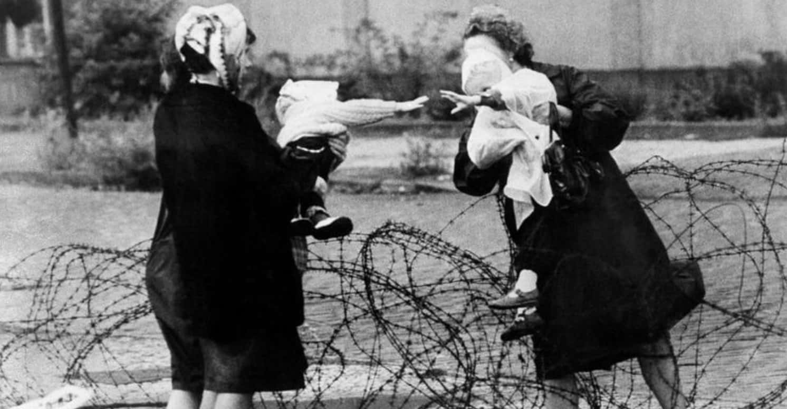 La construcción En los días siguientes, las autoridades de Alemania del Este comenzaron a sustituir los rollos de alambre por una estructura más permanente de bloques de cemento y losas de hormigón: el Muro de Berlín propiamente dicho. Calles, plazas y casas quedaron divididas por la construcción del Muro, que también interrumpió el transporte urbano y se fue ampliando hasta llegar a los 155 kilómetros. El muro que transcurría por el centro de la ciudad y que separaba Berlín Oriental de Berlín Occidental tenía una longitud de 43 kilómetros y 8 pasos fronterizos en total. 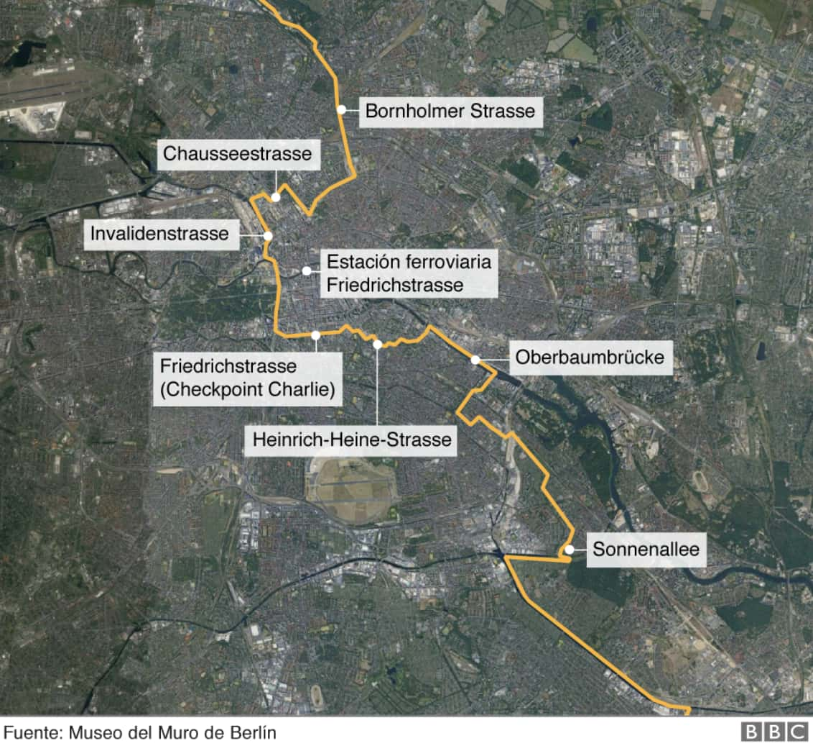 Las instalaciones fronterizas que separaban Berlín Occidental del resto de la RDA, tenían 112 kilómetros. También se siguió perfeccionando el sistema de control fronterizo: había dos muros, uno interno y otro externo, vallas electrificadas, torres de vigilancia, perros guardianes, una zanja antivehículos y miles de policías y soldados que podían disparar a quién osase cruzar la fortificación. Aunque es difícil concretar una cifra, según la página del Muro de Berlín al menos 140 personas murieron en el Muro de Berlín entre 1961 y 1989 al intentar huir. Por su parte, un estudio de la Universidad Libre de Berlín de 2017 sitúa esa cifra en 262. ¿Porqué calló el muro? Aunque parezca que el Muro de Berlín cayó de un día para otro, en realidad puede considerarse la culminación de un proceso. En todo el bloque soviético soplaban vientos de cambio y para Carmen Claudín, investigadora especializada en historia rusa y soviética del Barcelona Centre for International Affairs (CIDOB) —un think tank con sede en Barcelona y especializado en asuntos internacionales— esos vientos tenían su origen en Moscú. "La caída del Muro no hubiera sido posible sin las políticas de (Mijaíl) Gorbachov en la URSS", dice la experta. En marzo 1985, Gorbachov se convirtió en secretario general del Partido Comunista, lanzando un dramático programa de reformas. Su política conocida como "Glasnost" (apertura, transparencia) consistía en eliminar las prácticas de la represión estalinista y darles más libertades a los ciudadanos soviético, que vieron como presos políticos eran liberados y los periódicos publicaban artículos críticos hacia el gobierno. Estas políticas se dejaron sentir no solo en la URSS, sino también en algunos de los países satélites de la Unión Soviética en Europa. 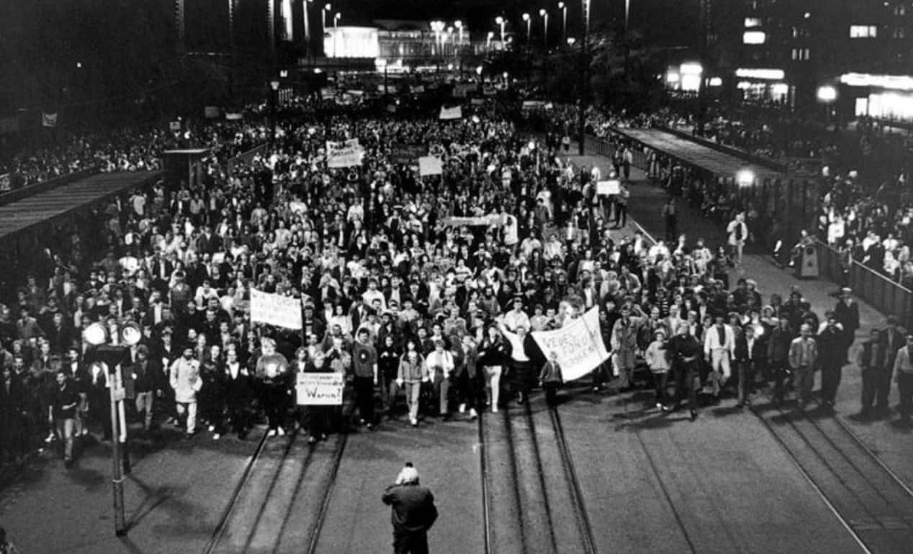 Las protestas de la gente El mismo año de la caída del Muro, en junio de 1989, en Polonia el movimiento sindical no comunista Solidaridad de Lech Valesa logró que se celebraran las primeras elecciones parcialmente libres en décadas. Hungría abrió completamente sus fronteras y miles de "turistas" de Alemania del Este llegaron ese verano al país vecino en busca de una forma de cruzar a Austria. El éxodo se convirtió en una marea humana. Pero Erich Honecker, el líder comunista de la RDA, se resistía a las reformas. "¡Gorbi, Gorbi!" se convirtió en un grito popular entre los alemanes orientales hambrientos de reformas al estilo de Gorbachov. El líder soviético visitó Berlín Oriental para el 40 aniversario de la RDA, el 7 de octubre, e instó a Honecker a lanzar reformas, afirmando que "la vida castiga a los que llegan demasiado tarde". El 9 de octubre, una multitud sin precedentes de 70.000 personas se manifestó pacíficamente en el centro de Leipzig exigiendo libertad. Por primera vez se atrevieron a pasar por la temida sede de la Stasi. "¡Wir sind das Volk!", cantaban ("¡Somos el pueblo!"). Una semana después, más de 100.000 personas abarrotaron de nuevo el centro de Leipzig y las protestas pronto se extendieron por toda Alemania Oriental. Ya era demasiado tarde para Honecker, quien renunció el 18 de octubre y fue sustituido por Egon Krenz. Unos días antes de la apertura del Muro, el 4 de noviembre, otros cientos de miles de personas se manifestaron en Alexanderplatz, en Berlín oriental, pidiendo una reforma democrática, en la que fue una de las movilizaciones más importantes de la RDA. Como parte de estas protestas, los alemanes del Este comenzaron a exigir que se les permitiera cruzar a Alemania Occidental y para el gobierno comunista fue cada vez más difícil detener esos llamados. La caída del muro El 9 de noviembre, el anuncio de un alto funcionario de Alemania Oriental precipitó la caída del Muro. Guenter Schabowski, portavoz del gobierno de la RDA, anunció en una conferencia de prensa que las restricciones de viaje para los ciudadanos del este se levantarían de inmediato. Los funcionarios tenían la intención de introducir los cambios al día siguiente, pero cuando se le preguntó en la conferencia, Schabowski dijo: "Esto ocurre, que yo sepa... inmediatamente... sin demora". Dichas palabras provocaron que miles de personas se fueran hacia el Muro, exigiendo a los guardias que abrieran las puertas. Los guardias del paso fronterizo de Bornholmer dejaron pasar a los primeros ciudadanos de la RDA hacia Berlín Occidental a partir de las 21:20; miles de personas cruzaron en las siguientes horas a Alemania Occidental, algunas por primera vez en sus vidas, provocando la rápida caída del muro. Y mientras una multitud eufórica de alemanes del este cruzaba la frontera abierta, cientos de personas de Alemania Occidental los esperaban y celebraban el momento histórico. La gente sintió alegría y una feliz sensación de conmoción, de que algo que pensaban que nunca sucedería o que al menos nunca sucedería en su vida, repentinamente pasó de la noche a la mañana pacíficamente. Aunque el impacto inmediato de la caída del Muro de Berlín fue evidente para los alemanes del este, las consecuencias de este hecho histórico van mucho más allá. Conoce lo que nuestros amigos viajeros experimentaron al visitar el lugar aquí. 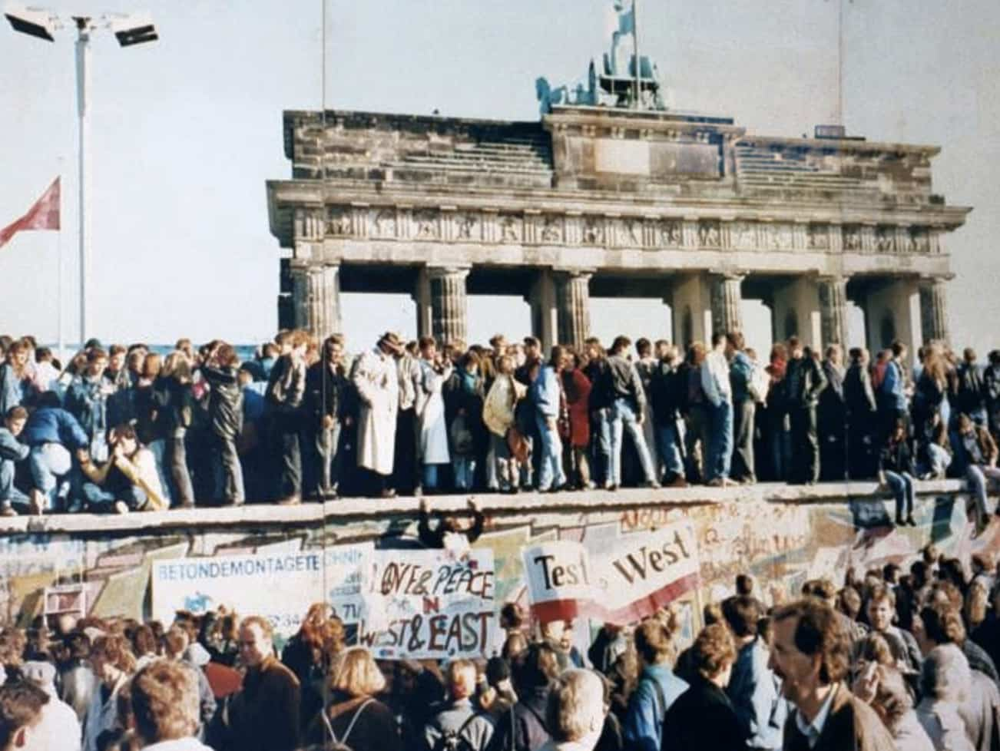
La puerta de Brandeburgo 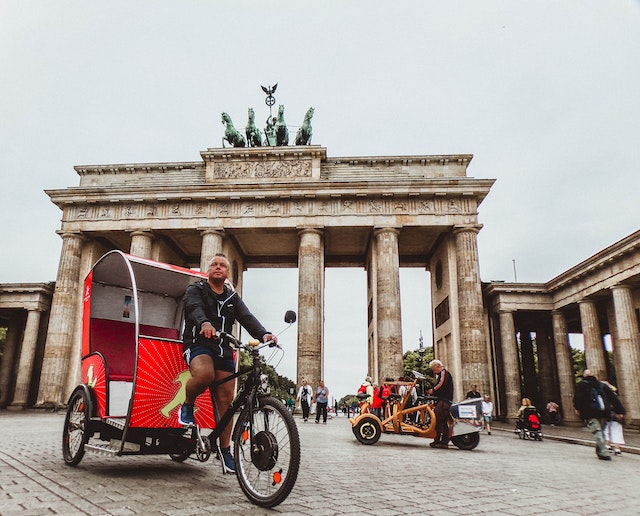 Es un monumento neoclásico del siglo XVIII situado en Berlín, construido por orden del rey de Prusia, Federico Guillermo II, después de reprimir la revuelta popular holandesa y restaurar el poder orangista en los Países Bajos. Es uno de los monumentos más conocidos de Alemania, y fue construida en la ubicación de la antigua puerta de la ciudad en la que comenzaba la carretera que conducía de Berlín a la Ciudad de Brandeburgo (en alemán, Brandenburg an der Havel), que era la capital del Margraviato de Brandeburgo. Está situada en la parte occidental del centro de Berlín, en Mitte, en la intersección de Unter den Linden y Ebertstraße, al oeste de la plaza de París. Una manzana al norte está el edificio del Reichstag, que alberga el Parlamento alemán (Bundestag). La puerta constituye la entrada monumental a Unter den Linden, un bulevar con tilos que conduce directamente al Palacio Real de los monarcas prusianos. La isla de los museos 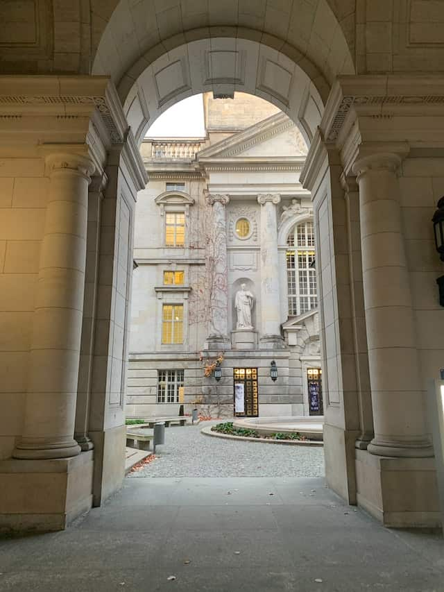 La Isla de los Museos (en alemán, Museumsinsel) es el nombre de la mitad septentrional de la Spreeinsel, una isla en el río Spree, en el centro de Berlín, Alemania (la parte meridional de la isla se llama Fischerinsel, que significa "Isla de los Pescadores"). La isla recibió su nombre de varios museos de renombre internacional que hoy ocupan la totalidad de la mitad norte de la isla (originariamente un área residencial dedicada al "arte y la ciencia" por el rey Federico Guillermo IV de Prusia en 1841). Formadas bajo varios reyes prusianos, sus colecciones de arte y arqueología pasaron a una fundación pública en 1918, la Stiftung Preußischer Kulturbesitz (Fundación del Patrimonio cultural prusiano), que mantiene hoy las colecciones y los museos. La colecciones prusianas quedaron separadas durante la Guerra Fría con la ciudad en su conjunto, pero fueron finalmente reagrupadas después de la Reunificación alemana. Actualmente, la Museumsinsel y las colecciones están en proceso de reorganización. Dado que varios museos resultaron destruidos durante la Segunda Guerra Mundial y parte del espacio de exhibición está en proceso de reconstrucción, la información que se proporciona aquí puede estar sujeta a modificaciones. Las colecciones que se unieron en la Isla de los Museos por primera vez permitieron una mirada unificada al arte europeo desde la Antigüedad hasta el siglo XIX, presentada en edificios que muestran la historia de museos en sí mismos por encima del curso de un centenar de años, y es por ello que todo el conjunto fue añadido a la lista de la Unesco de Patrimonio de la Humanidad en 1999. Además de los museos, en la isla se encuentra la Catedral de Berlín cerca del Lustgarten (Jardín del Placer) que anteriormente perteneció al Berliner Stadtschloss. Para aventurarse en lo que esconden estos magnificos museos reserva ahora. Check-point Charlie 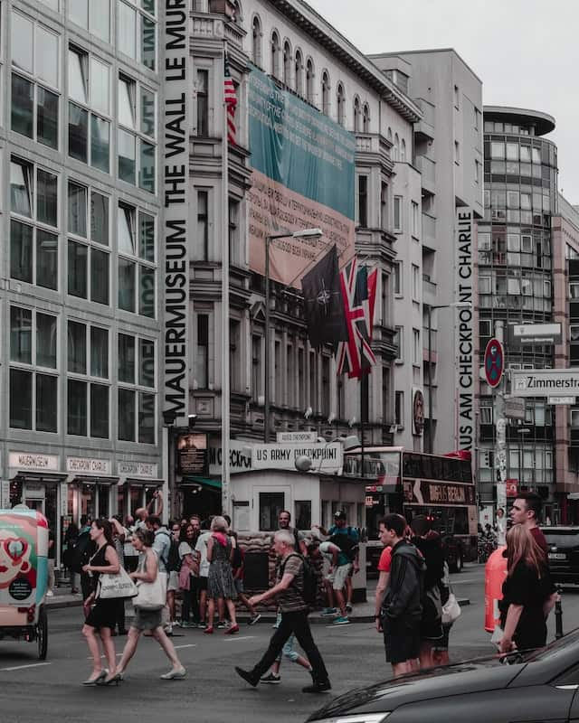 El punto de control Charlie, también llamado Checkpoint Charlie por su nombre en inglés, fue el más famoso de los pasos fronterizos del Muro de Berlín entre 1945 y 1990. Se encontraba en la Friedrichstraße y abría el paso a la zona de control aliada con la soviética, donde actualmente se unen los barrios de Mitte y Kreuzberg. Solo se permitía usarlo a empleados militares y de embajadas de los aliados, extranjeros, trabajadores de la delegación permanente de la RFA y funcionarios de la RDA. La denominación Charlie procede del alfabeto fonético de la OTAN y es su tercera letra. Checkpoint Alpha era el paso por la autopista en Helmstedt, Checkpoint Bravo el paso de autopista en Dreilinden. Como consecuencia del intento, por parte de la jefatura del SED, de restringir los derechos que como aliados tenían en Berlín las potencias occidentales, en octubre de 1961 tanques soviéticos y estadounidenses se posicionaron enfrentados con munición pesada. El Checkpoint Charlie fue escenario de huidas espectaculares de Berlín Este, algunas especialmente trágicas como la muerte de Peter Fechter, desangrado en 1962 ante los ojos de los que habitaban Berlín Oeste. El punto de control fue demolido el 22 de junio de 1990, de modo que salvo el Museo del Muro del Checkpoint Charlie no quedó nada que lo recordase, hasta el 13 de agosto de 2000, cuando se inauguró una reconstrucción de la primera caseta de control, idéntica salvo en los sacos de arena, que ahora están rellenos de cemento. En la actualidad, el punto de control Charlie es una de las atracciones turísticas de Berlín. Aparte del puesto, también se puede ver el museo dedicado a la historia del muro, la última bandera soviética ("bandera del Kremlin") y varios fragmentos de la separación alemana. Del 31 de octubre de 2004 al 5 de julio de 2005, hubo también un polémico monumento a las víctimas del Muro de Berlín. El parlamento alemán 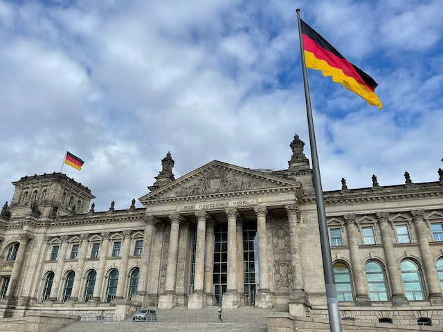 El Parlamento Federal(en alemán "Bundestag"), es el órgano federal supremo legislativo de la República Federal de Alemania. Es comparable a una cámara baja, similar a la Cámara de Representantes de los Estados Unidos o la Cámara de los Comunes del Reino Unido. Su cometido principal es representar la voluntad del pueblo. El Parlamento decide las leyes federales, elige al canciller de Alemania y controla el trabajo del gobierno. Los diputados se eligen cada cuatro años. El Bundestag fue establecido por el Título III de la Ley Fundamental para la República Federal de Alemania en 1949 como uno de los órganos legislativos de Alemania y, por lo tanto, es el sucesor histórico del anterior Reichstag. El Bundestag tiene varias funciones. Junto con el Bundesrat, la cámara alta, el Bundestag constituye la rama legislativa del Gobierno Federal. Los estados federales (Bundesländer) de Alemania participan a través del Bundesrat en un proceso legislativo similar a una cámara alta en un parlamento bicameral; sin embargo, la Ley Fundamental considera que el Bundestag y el Bundesrat están separados entre sí. Sin embargo, el Bundestag y el Bundesrat trabajan juntos en el procedimiento legislativo a nivel federal. El monumento a los judíos de europa asesinados 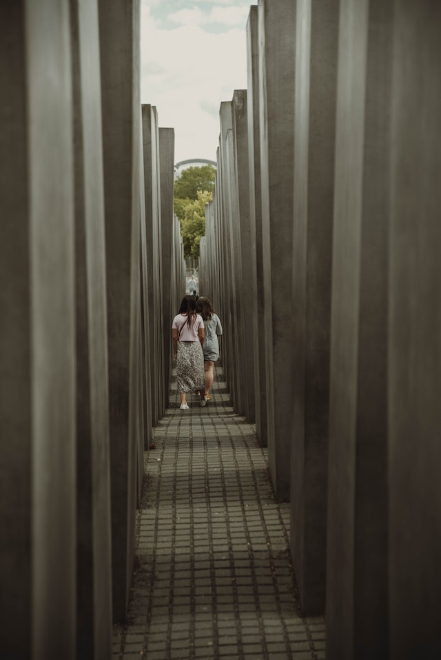 (En alemán, “Denkmal für die ermordeten Juden Europas”), también conocido como Holocaust-Mahnmal o Monumento del holocausto, es un monumento que recuerda en Berlín a los judíos víctimas del holocausto. Fue diseñado por el arquitecto Peter Eisenman y por el ingeniero Buro Happold. Se trata de un campo inclinado de 19 000 metros cuadrados cubierto por una rejilla cuadriculada en la que están situadas 2711 estelas o losas de hormigón. Estas losas tienen unas dimensiones de 2,38 m de largo y 0,95 m de ancho, y varían en cuanto a su altura, desde los 0,2 m a los 4,8 m. De acuerdo con el proyecto de Eisenman, las estelas están diseñadas para producir una atmósfera incómoda y confusa, y todo el monumento busca representar un sistema supuestamente ordenado que ha perdido contacto con la razón humana. La construcción del monumento se inició el 1 de abril de 2003 y fue terminado el 15 de diciembre de 2004. Fue inaugurado el 10 de mayo de 2005 y se abrió al público el 12 de mayo del mismo año. Está situado una manzana al sur de la puerta de Brandeburgo, en el suburbio berlinés de Friedrichstadt, y al costado de donde alguna vez estuvo el "Reichspraesidentenpalais", residencia de los presidentes de la era Weimar.